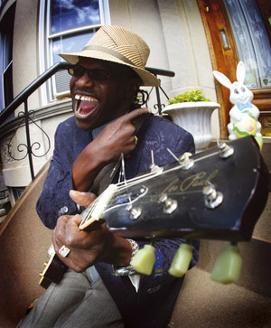
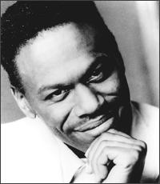
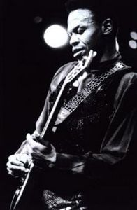
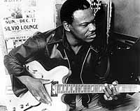
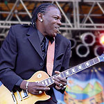
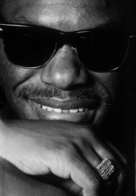
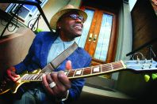
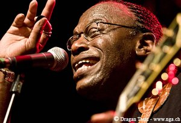

Joe Louis WalkerНа церемонии Blues Awards, вручаемых Blues Foundation, Джо Луи Уокер получил одну из центральных наград: "Блюзовый альбом года" - за альбом "Between A Rock And The Blues". В связи с чем Blues.Ru предлагает перевод этого свежего и несколько пафосного интервью с сугубо пафосным заголовком. Интервью было записано до того, как Уокер узнал о получении этой награды, было известно только, что он номинируется в пяти категориях. Joe Louis Walker - The Great Modern Troubador (by Sandra Pointer-Jones)ДЖО ЛУИ УОКЕР - ВЕЛИКИЙ ТРУБАДУР СОВРЕМЕННОСТИ(Сокращенный перевод статьи из журнала Blues Revue June/July 2010) "Нет быстрого пути к приобретению опыта, так обычно говорят, но такого короткого пути действительно нет. Чтобы его приобрести, нужно платить. И в нашем деле платить приходиться или своей кровью, или еще чем-то",  - это слова блюзового артиста-ветерана Джо Луи Уокера. Заметьте, Уокер не говорит о быстром пути к славе, или звездности, или известности. Ключевое слово здесь опыт, и Уокер лучше всех понимает, что значит опыт.Он родился в музыкальной семье, и профессиональным музыкантом стал в 14 лет. Он работал с невообразимо разными артистами, от блюзовых гигантов, таких как Мадди Уотерc, Ирл Хукер и БиБиКинг, до таких джазовых кумиров, как Телониус Монк и Брандфорд Морсалис, и даже с пионером рок-н-ролла Скотти Муром, гитаристом Элвиса Пресли. Его замечательные таланты певца, сочинителя песен и продюсера принесли ему несколько Грэмми и множество наград имени Дабл-Ю Си Хэнди. В этом году он номинировался в еще 5 категориях, и выиграл Блюзовую Премию (Blues Award) в категории "Альбом года". "Приятно быть в числе кандидатов. Иногда песня может отсиживаться годами, и потом для них словно наступает подходящее время выйти в мир. Зависит от того, что в моей жизни происходит на этот момент. А, если быть совсем честным, иногда для этого нет ни прямой причины, ни совпадения внешних обстоятельств". "Я написал песню "Я отправлюсь на небеса в одиночестве" (I'll Go To Heaven On My Own) - она в прошлом году номинировалась на "Блюзовую песню года". Это очень эмоциональная песня. Я не могу ее петь на концертах - она о моей умершей сестре. У меня годы ушли на то, чтобы ее написать". "А песню "Я на подъеме" (I'mTide), которая номинировалась в этом году, я сочинил за 10 минут. Кэти Уэбстер (Katie Webster) много лет назад подала мне ее идею. Я только не знал, к чему ее приложить. В 80-х я аккомпанировал Кэти Уэбстер, и она частенько говорила: "Джо, I'm T-I-D-E, tide". (Каламбур на созвучие со словами "I'm tired" - "Я устала"). И я думал, что однажды я напишу про это песню. И вот все сложилось". С начала 60-х он работал над собой и набирался опыта. Отец у него из Миссиссиппи, мать из Арканзаса - и как он мог не услышать блюз? Он родился на Рождество 1949 года, вырос в районе Сан-Франциско под названием Хейт-Эшбури до того, как здесь зародилось движение хиппи. Ко времени расцвета Лета любви в 1967 году Уокер занимался тем, что отвечал на газетные объявления о найме музыкантов. И он работал с такими артистами, как Миссиссиппи Фред МакДауэлл и Лайтнинг Хопкинс. Уокер рассказывает, что все началось для него дома, когда музыка была наградой за хорошее поведение.  "Мне было шесть или семь лет, мой папа возвращался с работы на стройке, и, если я был хорошим мальчиком, он ставил пластинки-сорокопятки. А если я был плохим мальчиком, он их не включал. И я старался вести себя настолько хорошо, насколько только это было возможно для меня, потому что я любил эту музыку. Моя мать так много ставила БиБиКинга, что я думал, БиБиКинг был моим папой! Мы с БиБи теперь смеемся над этим. БиБи поговаривает: "Ну, Джо, Я бы мог им быть!" В 8 лет в школе я перепробовал все инструменты, которые там были. Я пытался играть на аккордеоне, у меня немного получалось. Я бы притащил домой пианино, если бы смог его поднять. Я пробовал скрипку, извлекал из нее какой-то шум. Но позже у меня стало получаться играть довольно хорошо на фортепиано и гитаре"."Все мои двоюродные братья играли. А таскал за ними оборудования года два, прежде чем они разрешили мне играть с ними на бас-гитаре. У нас была своя группа под названием the Brom Brothers - знаете, как Brougham (Повозка 19 века, которую "Кадиллак" использовали в моделях "Эльдорадо" и "Флитвуд"). Черные ребята, мы не можем произнести "Brougham", мы говорим "Brom". "Братья Бром" аккомпанировали всем подряд. Я стал членом музыкального профсоюза, когда мне было 14 лет. В 16 я уже был сам по себе, играя блюз и открывая концерты Лайтнинга Хопкинса и Фреда МакДауэлла". Можно представить себе сколько упорного труда и настойчивости требовалось от подростка, чтобы заполучить работу у таких разных музыкантов, как Soul Stirrers, Thelonious Monk или Steve Miller. В те дни Уокер рос за кулисами зала Fillmore Auditorium, и было это еще до того, как Билл Грэхам превратил его в штаб-квартиру контркультуры 60-х. "Я учился в колледже, который был всего в пол-квартале от Аудиториума. Мы там устраивали наши сражения групп. Там у увидел the Temtations с моим любимым певцом David Ruffin. В 1964-м, когда мне было 14, я взял мою бабушку послушать Литл Ричарда, когда он на минутку стал религиозным. Вот на всем этом я рос плюс еще ходил в церковь".  "Когда появились хиппи, я играл для них всех. Я был во всяких группах. Я был в Blue Cheer (легендарные первопроходцы, хевиметаллический блюз-рок-бэнд 60-х). Я знал Бадди Майлза, когда мне было 17, и ему было 17. Я был в первом составе Buddy Miles Express. Так я познакомился с Джими Хендриксом, через Бадди. Это был свежак! Никто себе не представлял, что это принесет столько денег, и создаст столько последователей".Музыка процветала, а Сан-Франциско манил к себе свободную мысль, свободную любовь, свободную волю и великолепную музыку. Уокер легко перемещался от психоделической толпы к соул и блюзовым кумирам. Он проводил время с самими значимыми именами тех дней, с Джерри Гарсиа и участниками the Grateful Dead, с Jefferson Airplane, с Хендриксом. "Я хорошо знал всех тех ребят: Бобби Уомака, Бобби Бланда, БиБи и Литл Милтона. Мне повезло быть рядом с Лайтнингом Хопкинсом и Ирлом Хукером, и еще с другими стариками. Все эти ребята мне помогали и жалели меня. Они мне помогали, потому что я был абсолютно нищим, ел из мусорных баков, спал в выброшенных ванных, когда мне было 16 лет". Для подростка вести такой образ жизни без правил может оказаться небезопасно. В то время его лучшим другом, с которым они долго прожили в одной комнате, был Майк Блумфилд. "С Майком я познакомился через Джонни Краммера, который был двоюродным братом Барри Голдберга, который играл на органе в the Electric Flag. Когда Майк собрал "Электрик Флаг", вся эта группа вышвырнула его из его дома. Так что ему пришлось переехать к нам с Джонни, и мы крепко подружились". Блумфилд помог Уокеру пойти дальше в его музыкальной карьере, устроив ему знакомства в Чикаго. Многие из этих новых знакомых стали для него учителями и друзьями на всю жизнь. "Я хотел поехать туда и познакомиться с теми, кто был моими героям. И Майк устроил мне концерт с Отисом Рашем. Концерт совсем не удался, мы теперь с Отисом смеемся, вспоминая об этом, но концерт вовсе не удался. Мадди взял меня с собой на гастроли на две недели. И с Волком я познакомился. Они что-то разглядели во мне, эти старики. Я могу расчувствоваться говоря об этом, потому что всех их уже нет на свете. Они во мне видели самих себя таких, какими они были молодыми".  "Сейчас многие ребята учатся музыке по пластинкам. В этом нет ничего плохого, но это не сравнится с тем, как Мадди говорит тебе… А у Мадди что ни слово, то motherfucker то, motherfucker сё… Так вот, он говорил: "Маленький motherfucker, вот как надо играть!" И знаете что? Только так и можно научиться. Нельзя научиться, если кто-то говорит тебе, какой ты милый".Но в Чикаго он оставался недолго. "Я буду честен, я не чикагский парень. И это хорошо, что я вернулся в Калифорнию, и занялся своим делом. Потому что я смешение музык. Если бы я остался в Чикаго, я бы просто стал чикагским парнем среди многих чикагских парней. Все случается не напрасно".  "Как рок-музыканты находят свои блюзовые корни, так я для себя нашел свои рок-корни. Так я это ощущаю. Я записал так много самых разных альбомов. Ты можешь делать все, что хочешь, только не теряй сущности блюза. А для меня сущность блюза в том, как сказал Боб Марли: "Это само страдание". Марли и Куртис Мэйфилд - это гении. У них железный кулак в вельветовой перчатке. Марли может произнести жесточайшую вещь: "Я застрелил шерифа" - и сделать это самым мягким способом… Я все время слушаю Куртиса. Он пел: "Педики! Ниггеры! Белые! Евреи! Голодранцы! Не переживайте, если есть ад под нами, мы все отправимся туда, и черные, и белые" - и никто не обижался. А потом он мог перевернуть все по другому, и написать "Люди, готовьтесь" и "Аминь"."Все это нормально, пока ты не теряешь сути, того, что идет от сердца к сердцу, что трогает душу. Когда Этта Джеймс пела "Лучше бы мне ослепнуть", можно эту песню представить в рок-контексте, если хотите. Но в каком бы контексте вы ее не представляли, вы должны чувствовать блюз (тоску). Вы должны чувствовать то, почему она предпочла бы ослепнуть, - в этом суть". "Эта музыка идет от страдания, она идет от людей определенного типа. Она не идет от W.E.B. Dubois, она идет от Роберта Джонсона, Сона Хауса, от таких людей, как они, от безграмотных людей, которые должны были все четко выражать сердцем, идя от сути". Определенно, Уокеру досталась своя доля страданий, сердечной боли и борьбы. Как и многие артисты, раскрутившиеся в богатые декадентством 60-е, он потанцевал с наркотиками. Танец перешел в борьбу с зависимостью, и Уокер понял, что он уже сражается за свою жизнь. Он видел своим глазами, как его лучший друг Блумфилд умирал от передозировки наркотиками в возрасте 38 лет, и как другие были разрушены наркотиками, он принял решение выиграть эту битву. "Многие мои друзья умерли, и я лег в клинику. Мне было 22 года, и я стал чист и трезв. Потом у меня был ужасный брак, и я снова сорвался. Но я снова собрал себя в кулак, и вот он я! Есть поговорка, когда люди строят планы, Бог смеется. Бог все спланировал для меня, а не я". Поскольку у блюза есть свои близкие связи с музыкой госпел, Уокер тоже близок к церковной музыке. Он почти десять лет провел в странствующей госпел-группе the Spiritual Corinthians, его роль весьма заметна в записи их альбома God Will Provide.  "В 1975 году случилось так, что бас-гитарист, которым был мой двоюродный брат Джерри Уокер, не пришел на концерт. Так что мне пришлось поиграть для них на басу. Я всем рассказывал, что я вышел на подмену на один вечер и остался на десять лет, потому что когда они услышали, как я играю на гитаре, они мне сказали: "Звони своему кузену, пусть он снова играет с нами на басу". Когда мой кузен узнал, что я буду играть на гитаре, все сложилось отлично. В госпел-группах это как молодой человек начинает взрослеть. Там тебя учат, как петь. Ты не поешь по чьим-то нотам. Я всем говорю, что после хорошей госпел-группы ты не захочешь уходить, потому что они поют для Бога. А это совсем другое".Сейчас Уокер не собирается покоится на лаврах. Он постоянно движется от одного проекта к другому, чтобы убеждаться, что он оставляет свой след в этом мире, оставляет за собой наследие, и возвращает то, что когда-то получил сам от него. "Я собираюсь выпустить (альбом) к 40-летию the Spiritual Corinthians. Я заново выпускаю тот альбом, с двумя новыми песнями. И я иногда присоединяюсь к the Blind Boys of Alabama. Вероятно, я буду больше работать продюсером. Есть у меня несколько парней, которых я называю своими щенками Murali Coryelli, Kirk Fletcher из the Thunderbirds и Paul Lydell из Нью-Йорка. Послушайте концертную пластинку, когда она выйдет - они все там". "Говорят, когда постучишь в ворота Св.Петра, он спросит: "Что ты сделал для людей?" Надеюсь, я смогу сказать, что я поделился с миром тем, чем старики поделились со мной. Все это в моей музыке. Если вы послушаете эту музыку, вы поймете, кто я такой. Прочитать обо мне вы можете что угодно, и что-то будет правдой, а что-то нет. Я не стыжусь ничего из того, что я сделал. Но если вы послушаете мою музыку во всем ее разнообразии, вы поймете, откуда я пришел и куда направляюсь".  В звукозаписи, от его первого альбома "The Gift", до альбома "Great Guitars" 1997 года, в записи которого принимали участие первооткрывателю блюзовой гитары и который был одним из самых продаваемых альбомов того десятилетия, до двух его последних альбомов, выпущенных лейблом Stone Plain: "Between A Rock and the Blues" и "Witness to the Blues" - критики всегда хвалили Уокера на высшем уровне. Он жил и работал в Канаде, Франции, Англии и в Скандинавии. На протяжении четырех десятилетий он объездил шарик сотню раз, следуя туда, куда звала его музыка. Не зная границ, этот артист несомненно является великим трубадуром современности. |